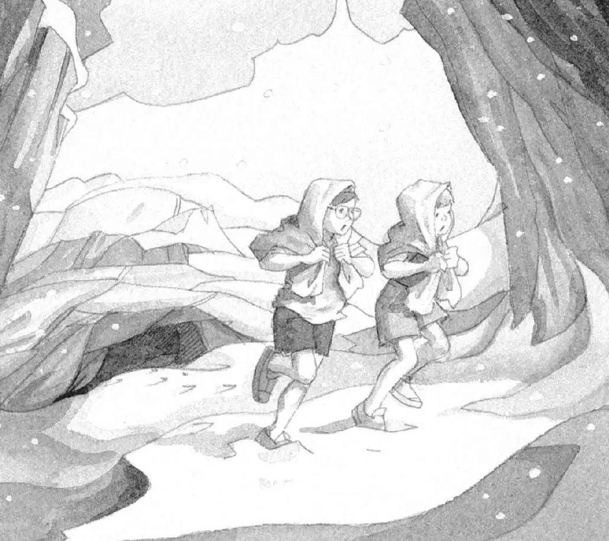

“Annie!” whispered Jack again.
No answer.
He put his book quietly into his pack. He stepped deeper into the cave.
“Annie!” he said a little louder.
Jack stepped on the bones.
The wet dog smell grew stronger.
He kept going, deeper into the smelly blackness.
He ran into something. He gasped.
“Jack?” said Annie. “Is that you?”
“Didn’t you hear me calling?” Jack whispered. “We have to get out of here!”
“Wait,” she said. “Someone’s sleeping back there. Hear him snoring?”
Jack heard a low, deep moaning. It was loud, then soft. Loud, then soft.
“That’s not a person,” he said. “It’s a great cave bear!”
A booming snore shattered the air.
“Yikes!” said Annie.
“Go! Go!” said Jack.
He and Annie ran through the cave, over the bones, and out into the falling snow.
They kept on going. They ran between fallen rocks and under jagged cliffs.

Finally they stopped and turned around.
All they could see was snow and rocks and their own footprints.
No bear.
“Whew,” said Annie. “That was lucky.”
“Yeah,” said Jack. “He probably never even woke up. We just got in a panic.”
Annie huddled close to Jack. “Brrr! I’m f-freezing,” she said.
“Me too,” he said.
He took off his glasses to wipe off the snow. The cold wind blew against his bare legs.
“Wow,” Annie said. “Look.” She pointed to something behind Jack.
“What?” Jack put his glasses back on and turned around.
Under a cliff was a wide ledge. Under the ledge was another cave.
Only this cave seemed to have a golden glow.
This one looked cozy and safe and warm.